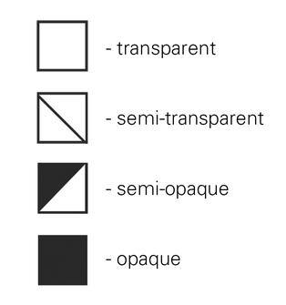
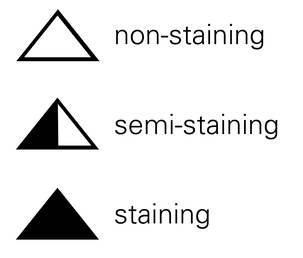
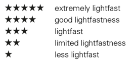
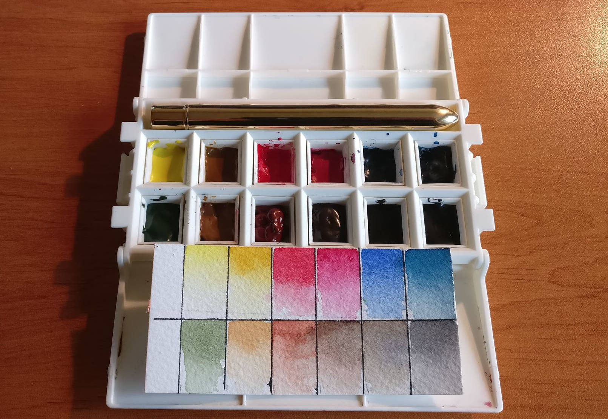

How to make a versatile watercolor palette ?
How to make a simple, versatile and durable watercolor palette ?
Buying watercolor paints can be very difficult. So much manufacturers, colors, formats ...
In this article, I'll going to help to make, an affordable, simple and very efficient watercolor palette.
A bit of theory first :
Watercolor paint is made of :
- One or severals pigments (10-20% of total paint composition)
- A backbone composition (60 % of total paint composition) a proprietary chemical solution, unique to each manufacturer, sometime made of :
- a brightener (lighten the paint when dry)
- a humectant (to help paint dilution)
- a binder to carry the pigment and to help it to stay on a page. Historically, binder is gum arabic. With deforestation and the increase in the price of arabic gum, the binder is often replaced by a polymer (glycol). Brand like sennelier still use arabic gum and honey as binder
- water (10-20%)
Rule 1 : Buy new colors based on their characteristics
Transparency :
Transparency is the amount of light that can passes through a color:
- transparent : a lot of light passes
- opaque : little or no light passes

Staining :
Define how the pigment will stick on the paper. This characteristics can be decisive for dry paint lifting techniques.

Saturation :
Saturated colors are colors that tend to be pure and close to the outer circle of the color wheel.
These colors give better results when mixed togather.
Durability :
Light, humidity and time can deteriorate pigment. You don't want to lose your masterpiece ? Use durable pigment.
Rule 2 : Check pigments before buying paint
Some manufacters like kuretake don't indicate the pigments used in their paints. To be avoided absolutely for any serious work.
Some pigments are marked as not durable (not resistant to light).

To avoid :
- yellow : PY1, PY1:1, PY24, PY34, NY55, PY40
- Orange : PO1, PO13, PO34
- Red : Every pigment below PR100 except (PR5, PR6, PR7, PR9, PR48:4 and PR88MRS)
- Violet : PV1, PV2, PV3, PV4, PV5:1, PV23BS, PV22RS, PV39
- Blue : PB1, PB24, PB66
- Green : PG1, PG2, PG8, PG12
- Brown : NBR8, PBr8, PBr24
Rule 3 : Life is too short not ot use extra fine paint
Brands that I personally recommend : Sennelier (French) and Schmincke (German).
Rule 4 : Feel free to mix paints from different manufacturers
Do not trust manufacturers when they discourage you to mix their paint with another brand. It's mostly a commercial argument.
An exemple of a very versatile palette :
What do you really need ? Warm and cool version of each of the primary colors and eventually specific colors, such as green, earth tone, black, sepia ...
- Light yellow : PY151 / PY154
- Deep yellow : PY35
- Medium Red : PR108 / PR254
- Deep red : PRPR122 / PR202
- Red blue (cobalt / ultramarine) : PB15:3 / PB28 / PB29
- Middle blue (prussian blue): PB27
Optionnal :
- Basic green : PG7
- Yellow green : PG36
- Ochre : Y43/Y42
- Earth : PBr7
- Payne Gray
- Sepia
And here's the result!
